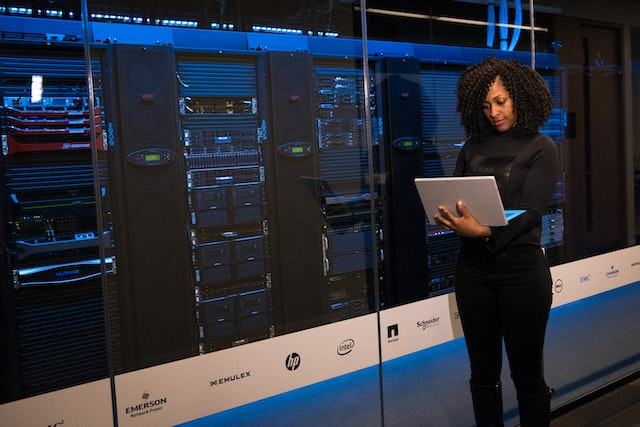

Informatica en la nube
La informática en la nube es la prestación de servicios informáticos a través de Internet. Los servicios informáticos incluyen infraestructura de TI común, como máquinas virtuales, almacenamiento, bases de datos y redes. Los servicios en la nube también amplían las ofertas de TI tradicionales para incluir cosas como Internet de las cosas (IoT), el aprendizaje automático (ML) y la inteligencia artificial (IA). Dado que la informática en la nube usa Internet para ofrecer estos servicios, no es necesario que la infraestructura física la restrinja del mismo modo que un centro de datos tradicional. Esto significa que si necesita aumentar rápidamente la infraestructura de TI, no tiene que esperar a crear un centro de datos, sino que puede usar la nube para expandir rápidamente la superficie de TI.
video microsoftinfraestructura TI modelos
Nube privada.
Comencemos con una nube privada. Una nube privada es, de alguna manera, la evolución natural de un centro de datos corporativo. Es una nube que brinda servicios de TI a través de Internet y es utilizada por una sola entidad. La nube privada proporciona un control mucho mayor para la empresa y su departamento de TI. Sin embargo, también incluye un mayor costo y menos ventajas que una implementación en la nube pública. Por último, una nube privada se puede hospedar desde el centro de datos del sitio. También puede hospedarse en un centro de datos dedicado fuera del sitio, posiblemente incluso por un tercero que haya dedicado ese centro de datos a su empresa.
Nube publica.
Un proveedor de nube de terceros crea, controla y mantiene una nube pública. Con una nube pública, cualquier persona que quiera comprar servicios en la nube puede acceder a los recursos y usarlos. La disponibilidad pública general es una diferencia clave entre las nubes públicas y privadas.
Nube hibrida.
Una nube híbrida es un entorno informático que usa nubes públicas y privadas en un entorno interconectado. Se puede usar un entorno de nube híbrida para permitir el incremento de una nube privada y acomodarse al aumento de la demanda temporal mediante la implementación de recursos de nube pública. La nube híbrida se puede usar para proporcionar una capa adicional de seguridad. Por ejemplo, los usuarios pueden elegir de forma flexible qué servicios mantener en la nube pública y qué implementar en su infraestructura de nube privada.
Inteligencia artificial
En pocas palabras, la inteligencia artificial es la creación de software que imita comportamientos y capacidades humanas. Las cargas de trabajo clave incluyen: Aprendizaje automático: a menudo es la base de un sistema de IA y es la forma de "enseñar" a un modelo informático a realizar predicciones y obtener conclusiones a partir de los datos. Detección de anomalías: la capacidad de detectar automáticamente errores o actividades inusuales en un sistema. Visión informática: la capacidad del software de interpretar el mundo visualmente a través de cámaras, vídeos e imágenes. Procesamiento de lenguaje natural: la capacidad de un equipo de interpretar el lenguaje escrito o hablado, y responder. Minería de conocimiento: la capacidad de extraer información de grandes volúmenes de datos a menudo no estructurados para crear un almacén de conocimiento que permite búsquedas.
El aprendizaje automático es la base de la mayoría de soluciones de inteligencia artificial. Para empezar, se examinará un ejemplo real de cómo se puede usar el aprendizaje automático para solucionar un problema difícil. Las técnicas agrícolas sostenibles son esenciales para maximizar la producción alimentaria y proteger un medioambiente frágil. The Yield, una empresa de tecnología agrícola australiana, usa sensores, datos y aprendizaje automático para ayudar a los agricultores a tomar decisiones fundamentadas relacionadas con las condiciones meteorológicas, del suelo y
¿cómo aprenden las máquinas? La respuesta es: a partir de los datos. En el mundo actual, se crean enormes volúmenes de datos en el transcurso de la vida cotidiana. A partir de los mensajes de texto, los correos electrónicos y las publicaciones en redes sociales a las que se envían las fotografías y vídeos que se toman en los teléfonos, se generan cantidades masivas de información. Millones de sensores crean todavía más datos en hogares, automóviles, ciudades, infraestructura de transporte público y fábricas. Los científicos de datos pueden usar todos esos datos para entrenar modelos de Machine Learning que pueden realizar predicciones e inferencias en función de las relaciones que encuentran en los datos. Por ejemplo, imagine que una organización de conservación del medioambiente busca voluntarios para identificar y catalogar diferentes especies de flores silvestres mediante una aplicación telefónica.
Internet de las cosas
El Internet de las cosas (IoT) es una prometedora tecnología que está transformando a las empresas. En el mundo empresarial, IoT sigue creciendo, especialmente en algunos sectores industriales básicos como la fabricación, la venta al por menor, el transporte, la administración pública y la atención sanitaria. La eficacia, la productividad y la seguridad son las principales razones para que las empresas adopten IoT.
A pesar de las promesas de la tecnología, muchas implementaciones de IoT no progresan más allá de la fase de prueba de concepto (POC). Por lo general, los clientes no ven el valor empresarial de IoT. No entienden cómo se puede escalar IoT. A los clientes les preocupa la seguridad. Y, por último, a los clientes les confunden las diferencias entre las ventajas para las empresas y los consumidores. Por ejemplo, el tostador y el frigorífico conectado llegan a los titulares de los medios. Pero no está claro cómo estas aplicaciones de consumidor se traducen en ventajas para la empresa
Imagine que dirige una empresa de logística responsable de transportar frutas y otros productos alimenticios perecederos de los productores a los distribuidores. En el proceso de transporte, la fruta se debe mantener a las condiciones correctas de temperatura, humedad y exposición a la luz. En los camiones, hay sensores individuales que realizan el seguimiento de la temperatura, la humedad y la exposición a la luz. El distribuidor tiene estrictos requisitos de calidad. Del mismo modo, el productor se quiere asegurar de que su fruta permanezca fresca. Los clientes son cada vez más estrictos en cuanto a sus especificaciones. Los clientes quieren ver una pista de auditoría de la fruta del "árbol a la mesa". En este escenario, las soluciones de IoT garantizan que la fruta es fresca durante el viaje. En el caso más simple, se realiza el seguimiento del estado de producto (por ejemplo, la temperatura) mediante sensores. Pero para proporcionar valor empresarial al cliente se necesita una solución más completa.
¿Qué es una base de datos en la nube?
Una base de datos en la nube es un servicio de base de datos creado y accedido por medio de una plataforma en la nube. Sirve a muchas de las mismas funciones que una base de datos tradicional, con la flexibilidad añadida de la computación en la nube. Para implementar la base de datos, los usuarios instalan el software en una infraestructura en la nube. Características clave: Un servicio de base de datos creado y accedido a través de una plataforma en la nube Permite a los usuarios de empresa alojar bases de datos sin comprar hardware dedicado Puede ser gestionado por el usuario o ofrecido como un servicio y gestionado por un proveedor Puede dar soporte a las bases de datos SQL (incluso MySQL) o NoSQL Se ha accedido por medio de una interfaz web o una API proporcionada por el proveedor
Los usuarios pueden acceder a las bases de datos en la nube desde prácticamente cualquier lugar, utilizando una API del proveedor o una interfaz web. Las bases de datos en la nube pueden expandir sus capacidades de almacenamiento en el tiempo de ejecución, para adaptarse a necesidades cambiantes. Las organizaciones sólo pagan por lo que utilizan. En el caso de un desastre natural, fallo del equipo o corte de energía, los datos se mantienen seguros mediante las copias de seguridad en servidores remotos.
maquinas virtuales
Rafael perez guzman
Hola mi nombre es Rafael perez guzman, soy estudiante del programa ingenieria de sistemas, actualmente estoy en el curso ingenieria de las telecomunicaciones, este es un curso muy interesante por todos lo que se aprende en lo referente a las telecomunicaciones, te agradezco por visitar mi pagina...